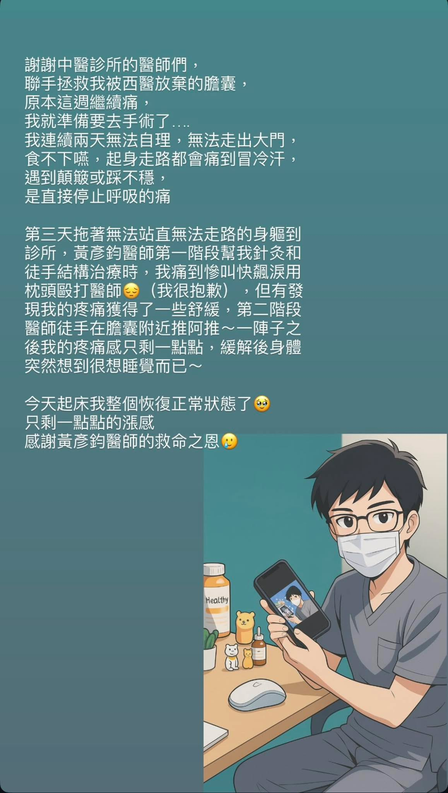

診所的助理妹妹，週日突然右上腹痛，直覺性懷疑急性膽囊炎，趕快叫她半夜掛急診，抽了…
診所的助理妹妹，週日突然右上腹痛，直覺性懷疑急性膽囊炎，趕快叫她半夜掛急診，抽了血、Sono/CT都照了但沒找到石頭，萬般無奈只能先吃止痛藥壓著！拜託多喝水！
週二去上班看到她還扶著她的膽🤣彎腰站不直，抓空檔幫忙看看能不能舒服點，又針又喬的，當晚看她上班就開始練囂話（⋯⋯恢復日常的樣子），好家在今晚傳來好消息！
老實講以我的程度，真的是秉著嘗試一把的心態，我知道有VM的高階技術，但我還沒學過，就憑直覺試試看，想不到有幫上忙，真的開心🥳 徒手真的是又立即又好玩，完全和我的胃口😊😊😊
水啦！很值得紀念一下！
#這張生成圖有帥😎😎😎
太初中醫診所
中醫師 黃彥鈞
